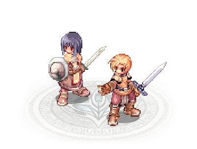
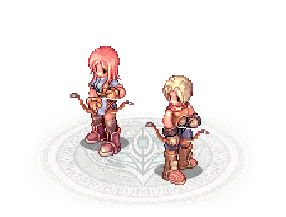
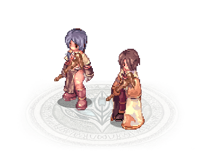

Espadachim |
Combate corpo a corpo
Espadachins podem usar as melhores armaduras de Rune-Midgard, que combinadas com o seu alto vigor e
capacidade de se curarem rapidamente, os tornam a frente de ataque em qualquer tipo de combate.
São capazes de empunhar tanto lanças quanto espadas de uma ou duas mãos, e estão sempre prontos a defender os mais
fracos e revidarem com força com suas incríveis habilidades de batalha.
|
Arqueiro |
Combate a distância
Arqueiros são hábeis atiradores, destacando-se pela enorme destreza e rapidez com o arco e flecha.
Conseguem abater seus inimigos a longas distâncias, antes mesmo de serem notados.
Sempre determinados a aprimorar sua maestria com o arco e flecha, os Arqueiros possuem habilidades
específicas para esta arma, que aumenta não só sua destreza, como também a agilidade.
|
Mago |
Combate a distância
Magos utilizam cajados para amplificar seus poderes arcanos, que combinados com um extenso conhecimento dos
elementos formadores do nosso mundo, são capazes de fazer estragos devastadores em questão de segundos.
Eles não podem usar armaduras pesadas e tem pouca HP, por isso sempre aplicam estratégias bem elaboradas e
reações rápidas nas batalhas, para aproveitarem ao máximo as fraquezas de seus adversários
|